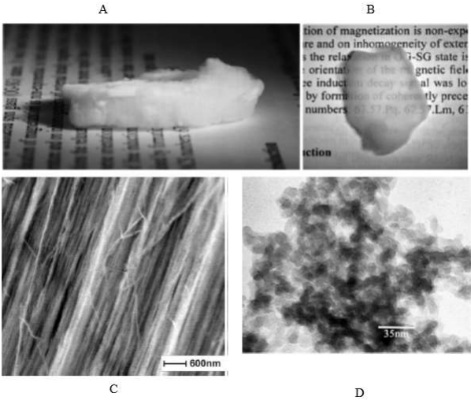

Y19 (2019) — English translation
Superfluidity $^3\rm He$ was discovered in 1972 - since then the phenomenon has been widely studied, and modern theory well describes the properties of pure superfluid $^3\rm He$. Superfluidity of $^3\rm He$ with impurities is an important problem in modern physics, but its solution is complicated by the fact that initially superfluid $^3\rm He$ is a very pure substance. At temperatures on the order of $1~\text{мК}$, when $^3\rm He$ becomes superfluid, all impurities freeze out, and the $^4\rm He$ isotope practically does not dissolve in $^3\rm He$. It became possible to solve this problem experimentally with the help of aerogels - special substances with high porosity ($\sim{98\text{%}}$). In such experiments, airgel particles play the role of impurities on which $^3\rm He$ particles are scattered. Airgel is a solid substance made of intertwined thin threads. The distance between the threads is much greater than their diameter. At the same time, by deforming the airgel, it is possible to ensure that the threads line up along one straight line. This alignment makes the material anisotropic. The anisotropy of the airgel is noticeable to the naked eye (see Fig. 1).
Rice. 1. Appearance of an “ordered” airgel in the direction along (B) and across (A) the threads. Micrographs obtained using electron microscopy show sections of the airgel in a plane parallel to the axis of the threads (C) and perpendicular to it (D)

Consider the two-dimensional motion of $^3\rm He$ atoms in a plane perpendicular to the airgel axis. The airgel sample can be considered infinite, the radius of the threads is $r=1~\text{нм}$, and their “concentration” per unit area is $n=10^{-4}~\text{нм}^{-2}$. We can assume that the threads are motionless and randomly located. The size of the $^3\rm He$ atoms can be neglected; the collisions of atoms with an airgel thread can be considered absolutely elastic - the $^3\rm He$ atoms retain the velocity $v=500~\text{м}/\text{с}$ upon impact, and the change in the direction of motion is given by the geometric law of reflection. The interaction between helium atoms can be neglected. Let us consider $N=10^{10}$ $^3\rm He$, the positions and directions of movement of which at the initial moment are chosen randomly.
Prefixes: femto - $10^{-15}$, pico - $10^{-12}$, nano - $10^{-9}$, micro - $10^{-6}$, milli - $10^{-3}$.
Source: https://pho.rs/p/3050